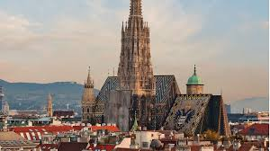
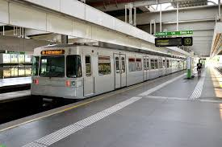
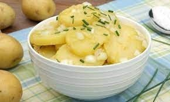
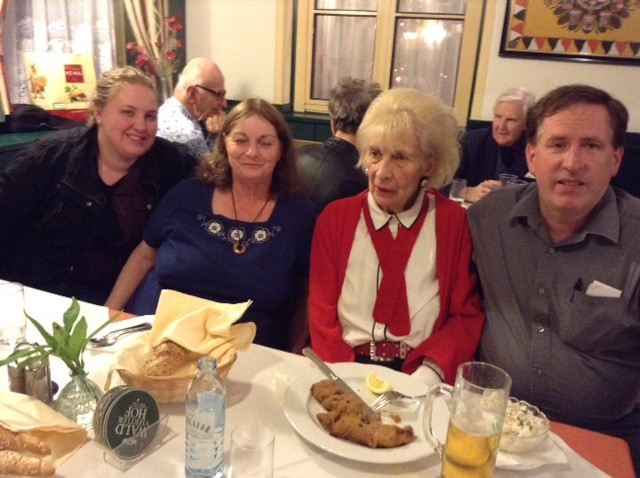

Vienna--a startling contrast of old and new. Here the most iconic of Vienna Landmarks, St. Stephens, or "Stephansdom"

The new: hypermodern subway system. Vienna boasts what is probably the best public transportation system in the world

You can't go to Vienna without stumbling upon Great Food! Here is the national dish, Wiener Schnitzel
You simply MUST have the ubiquitous Viennese potato salad (Kartoffelsalat)

Good food and friends and "Wiener Gemütlichkeit" go hand in hand -- Here is the author with his Mom, spouse, and daughter

Perhaps now you can see how Vienna might become your favorite city, too?